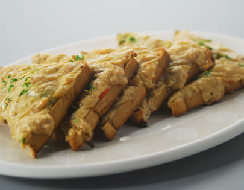

Cheese Toast
Ingredients
Cheddar cheese,grated 1/2 cupBrown bread slices 10-12
Milk 1/2 cup
Brown bread slices 6
Mustard powder 1/2 teaspoon
Olive oil as required
Black pepper powder 1/2 teaspoon
Butter 1 teaspoon
Tomatoes 2 medium
Green capsicums 2 medium
Green chilli,finely chopped 1
Method Preparation
Preheat oven to 170C. Heat .5 cup milk in a non stick pan, add cheese and cook. Cut 4 bread slices into triangles and place them on a baking tray, drizzle a little olive oil and toast in the preheated oven. Tear remaining bread slices, put in a blender jar and blend with hand blender to make fresh breadcrumbs. Add mustard powder, black pepper powder and butter to the milk-cheese mixture and mix well. Cut thin roundels of tomatoes.When cheese melts completely switch off heat, add breadcrumbs and mix. Cut green capsicums into big pieces and press lightly.Remove bread triangles from the oven. Place a capsicum piece and a tomato roundel on each triangle. Spread cheese sauce generously over the vegetables, sprinkle green chillies on top and toast in the oven till cheese bubbles and turns a light golden. Serve hot.